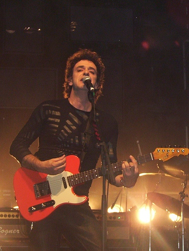

.jpg){kind=link}
{kind=link}
{kind=link}
Bocanada
Un viaje entre samplers, guitarras y melodías que redefinió su sonido solista.
Conocer el álbumUna obra que sigue resonando
Músico, compositor y productor
Una voz esencial del rock latinoamericano, entre guitarras, electrónica y canciones que cambiaron el paisaje sonoro.
Explorar discografía
La persona detrás de la obra
Gustavo Cerati fue un músico, compositor y productor argentino. Su búsqueda unió la precisión del pop, la energía del rock y una profunda curiosidad por las texturas electrónicas.
Desde Soda Stereo hasta su obra solista, dejó canciones que siguen acompañando a distintas generaciones en toda América Latina.
Un recorrido en canciones
Forma junto a Zeta Bosio y Charly Alberti una de las bandas más influyentes del rock en español.
Su primer álbum solista consolida un universo sonoro personal, expansivo y experimental.
Publica su último álbum de estudio, una obra marcada por el viaje, las guitarras y la exploración.
Archivo visual


Álbumes esenciales
Un viaje entre samplers, guitarras y melodías que redefinió su sonido solista.
Conocer el álbumUn regreso eléctrico, directo y poderoso que conectó con una nueva generación.
Conocer el álbum